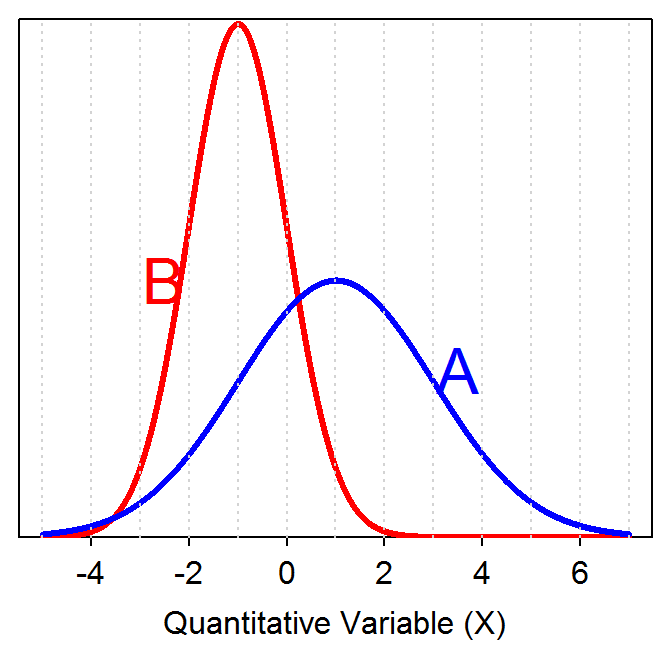
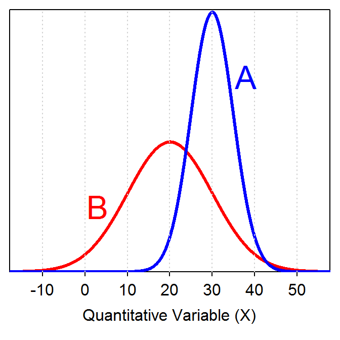

Identify the mean and standard deviation for each population on the graph below (HINT: “eyeball” integers).

Identify the mean and standard deviation for each population on the graph below (HINT: “eyeball” integers).

You can click on each question to see an answer. Click on it again to close the answer.